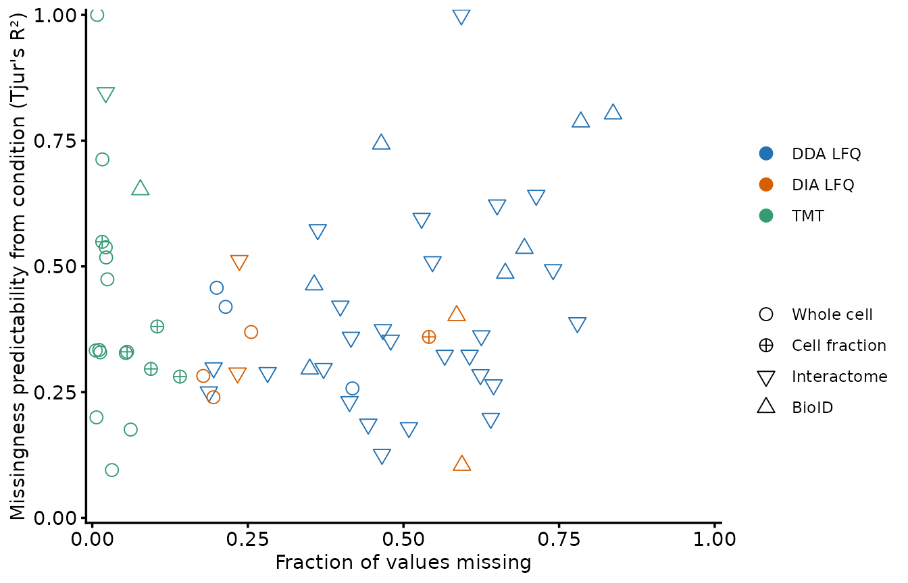
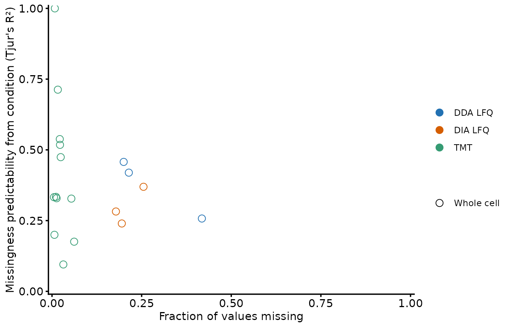
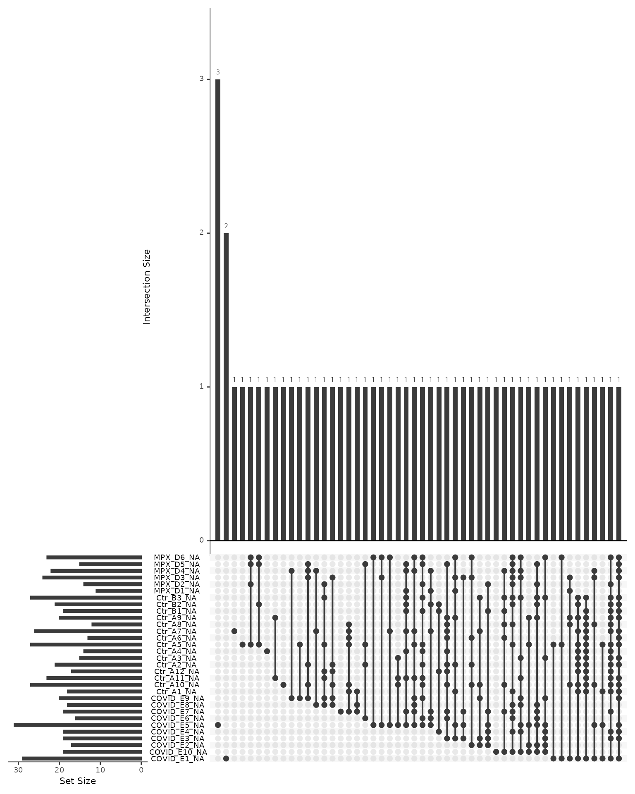
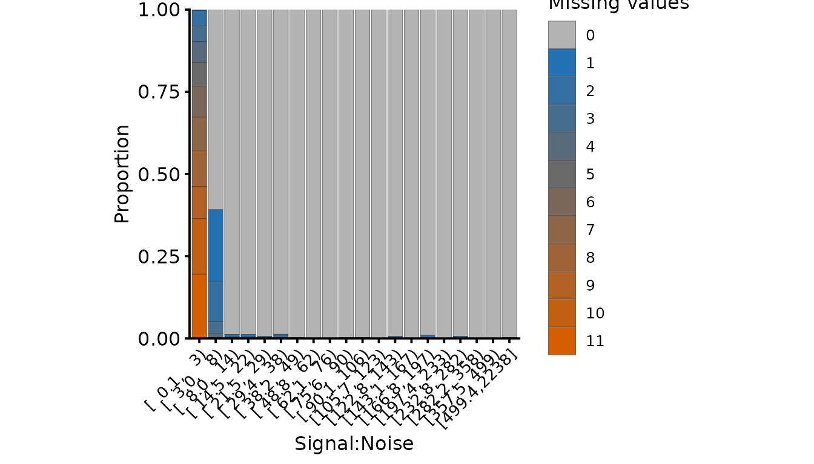
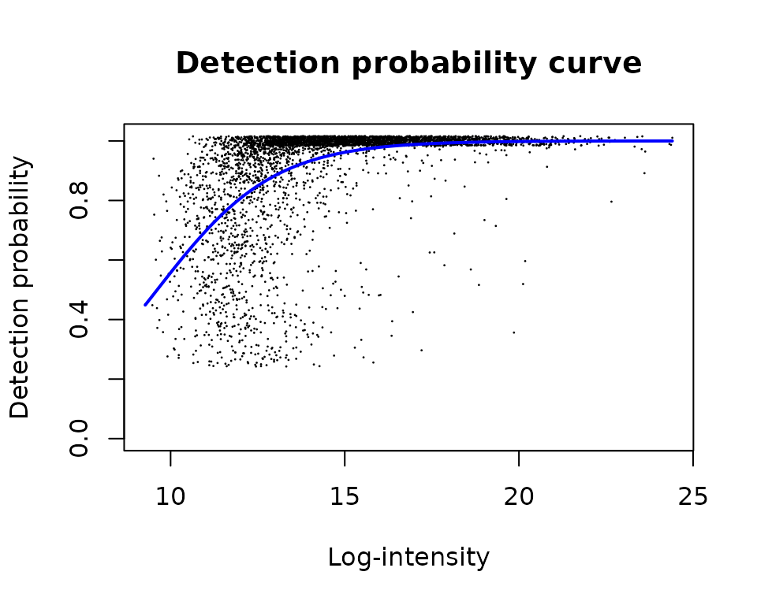
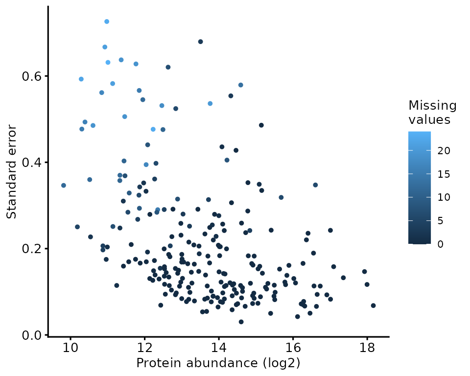
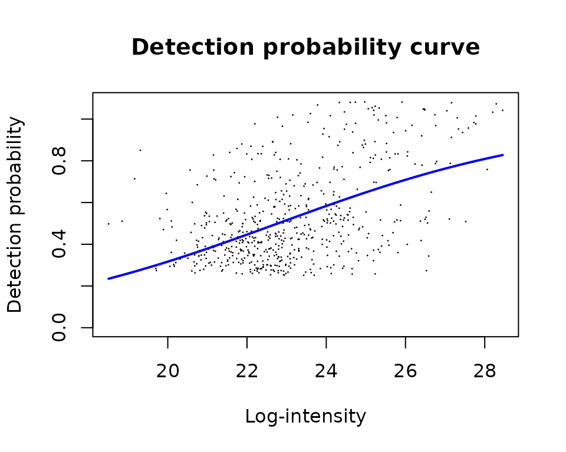

Handling missing values
Tom Smith
2026-09-11
Source:vignettes/handling_missing_values.Rmd
handling_missing_values.RmdEvery quantitative proteomics dataset has missing values, and every stage of an analysis makes a decision about them — usually implicitly. Filtering features, choosing a summarisation function, imputing or not, and choosing a statistical test are all, in part, choices about what a missing value means.
This article treats them as one decision rather than four. It works through where missing values come from, how to find out what yours look like, what can be done at each stage, and what each option costs. The costs are the point: there is no option here that is free, and the common failure is not picking the wrong one but picking one without noticing that a choice was made.
Where missing values come from
Missing value severity is set by how the data were acquired. How much of that missingness is structured by experimental condition is a separate question with a separate answer, and the two are easy to run together.
A survey of 63 experiments processed by the facility separates them. Each point is one experiment: the fraction of its matrix that is missing, against how well experimental condition predicts which values those are.
missingness_survey <- readRDS(system.file(
'extdata', 'missingness_survey.rds', package = 'biomasslmb'))
survey_experiments <- missingness_survey$experiments %>%
mutate(sample_type = factor(sample_type, levels = c(
'Whole cell', 'Cell fraction', 'Interactome', 'BioID')))
survey_experiments %>%
ggplot(aes(total_perc_missing, condition_miss_weighted_mean,
colour = ms_type, shape = sample_type)) +
geom_point(size = 3, stroke = 0.5) +
scale_shape_manual(values = c(1, 10, 6, 2), name = '') +
scale_colour_manual(values = get_cat_palette(3), name = '') +
scale_x_continuous(limits = c(0, 1), expand = c(0.01, 0)) +
scale_y_continuous(limits = c(0, 1), expand = c(0.01, 0)) +
theme_biomasslmb(base_size = 11, aspect_square = FALSE) +
labs(x = 'Fraction of values missing',
y = "Missingness predictability from condition (Tjur's R\u00b2)")
The y axis is the weighted mean Tjur’s R² that
condition_miss_index() returns as
weighted_mean_score, before its coverage penalty. The
penalised index scales with how many features have any
missingness at all, which would put a version of the x axis on both
axes.
The x axis separates the acquisition types completely. No TMT experiment in the survey exceeds 14.1% missing and no LFQ-DDA experiment falls below 18.7%. The mechanism is not in dispute: within a TMT plex every sample is quantified from the same MS2 spectrum, so a peptide is measured in all channels of that plex or in none of them. In LFQ each sample is a separate run, and whether a peptide is selected for fragmentation there is partly stochastic and strongly abundance-dependent.
The y axis separates almost nothing. Enrichment designs sit at a median of 0.37 against 0.33 for whole-cell and fractionated ones, on interquartile ranges that overlap across most of their length. Predictability from condition is close to uncorrelated with how much is missing (Spearman 0.08), and varies more inside each colour and shape than between them.
That shape is useful, but it comes with a confound worth naming. The facility runs most of its whole-proteome work on TMT and most of its enrichment work label-free, so acquisition type and experimental design are close to collinear here, and every comparison between colours is partly a comparison between shapes.
survey_experiments %>%
count(ms_type, sample_type) %>%
pivot_wider(names_from = sample_type, values_from = n, values_fill = 0) %>%
knitr::kable()| ms_type | Whole cell | Interactome | BioID | Cell fraction |
|---|---|---|---|---|
| DDA LFQ | 3 | 26 | 7 | 0 |
| DIA LFQ | 3 | 2 | 2 | 1 |
| TMT | 12 | 1 | 1 | 5 |
The circles carry the like-for-like comparison. Restricted to whole-cell experiments — the design both the TMT and LFQ vignettes work through:
survey_experiments %>%
filter(sample_type == 'Whole cell') %>%
ggplot(aes(total_perc_missing, condition_miss_weighted_mean,
colour = ms_type, shape = sample_type)) +
geom_point(size = 3, stroke = 0.5) +
scale_shape_manual(values = c(1, 10, 6, 2), name = '') +
scale_colour_manual(values = get_cat_palette(3), name = '') +
scale_x_continuous(limits = c(0, 1), expand = c(0.01, 0)) +
scale_y_continuous(limits = c(0, 1), expand = c(0.01, 0)) +
theme_biomasslmb(base_size = 11, aspect_square = FALSE) +
labs(x = 'Fraction of values missing',
y = "Missingness predictability from condition (Tjur's R\u00b2)")
survey_experiments %>%
filter(sample_type == 'Whole cell') %>%
group_by(ms_type) %>%
summarise(experiments = n(),
fraction_missing = round(median(total_perc_missing), 3),
abundance_predicts = round(median(tjur_r2_intensity_only), 3),
condition_predicts = round(median(condition_miss_weighted_mean), 3)) %>%
knitr::kable()| ms_type | experiments | fraction_missing | abundance_predicts | condition_predicts |
|---|---|---|---|---|
| DDA LFQ | 3 | 0.214 | 0.006 | 0.419 |
| DIA LFQ | 3 | 0.195 | 0.024 | 0.282 |
| TMT | 12 | 0.019 | 0.083 | 0.333 |
The severity gap survives the fair comparison, and 1.9% against 21.4% is the pair of numbers to benchmark a whole-proteome experiment against — on twelve TMT experiments and three LFQ-DDA ones, so read them as an order of magnitude rather than as precise figures. No difference in condition predictability survives it.
The abundance column runs the other way from the intuition. Abundance explains more of TMT’s missingness than of LFQ’s, not less, and the gap is wider among whole-cell experiments than across the whole survey. There is very little TMT missingness and almost all of it is the low-signal tail; LFQ has a great deal, and run-to-run sampling and match-between-runs add variation that has nothing to do with how abundant a protein is.
Three conclusions follow, and they set up everything below:
-
Imputation and missingness-aware models are responses to LFQ
problems.
robustSummary, limpa’s detection probability curve and imputation all address across-run missingness. Applying them to within-plex TMT data addresses a problem that is largely not there. - TMT’s missing value problem is between plexes, not within them. A protein quantified in every channel of plex 1 and absent from plex 2 is missing for structural reasons, and the fix is bridge correction and design, not imputation. See multi-plex TMT.
- How condition-structured your missingness is cannot be read off the acquisition type or the design. It varies more within those categories than between them, which is the argument for measuring it on your own data.
Diagnosing your own data
Aggregate survey numbers tell you what to expect. They do not tell you what you have, and the point of the diagnostics below is to make the choice that follows an informed one.
We use two of the packaged datasets: dia_qf, an LFQ-DIA
plasma case series, and tmt_qf, a single-plex TMT
comparison.
How much, and in what pattern?
c(dia_precursors = mean(is.na(assay(dia_qf[['peptides_filtered_norm']]))),
dia_protein = mean(is.na(assay(dia_qf[['protein']]))),
tmt_psms = mean(is.na(assay(tmt_qf[['psms_filtered_norm']]))),
tmt_protein = mean(is.na(assay(tmt_qf[['protein']])))) %>%
round(3)
#> dia_precursors dia_protein tmt_psms tmt_protein
#> 0.146 0.083 0.036 0.000The TMT protein assay has no missing values at all, and the DIA one has 8.3%. Summarisation reduces missingness in both cases, because a protein needs only one quantified feature to get a value — which is itself something to be careful about, and is why the QC vignettes mask protein values derived from too few features.
plot_missing_upset() shows which combinations
of samples are missing together. A few dominant patterns that align with
the experimental design mean something different from a long tail of
one-off patterns. Here, we have the latter.
plot_missing_upset(dia_qf, i = 'protein')
Is it explained by abundance, or by condition?
These are different problems with different remedies. Abundance-driven missingness is what imputation and detection-probability models are built for. Condition-driven missingness may be the biological signal itself, and imputing it discards the finding.
global_condition_miss_score() separates the two, fitting
missingness against abundance and then against abundance plus
condition:
dia_global <- global_condition_miss_score(
dia_qf, i = 'peptides_filtered_norm', group_cols = 'group')
c(abundance_only = dia_global$tjur_intensity_only,
condition_share = dia_global$tjur_condition_fraction,
lrt_p = dia_global$lrt_pvalue) %>%
signif(3)
#> abundance_only condition_share lrt_p
#> 1.10e-02 7.76e-02 2.02e-12Condition contributes a small but statistically detectable share here. That combination — a significant likelihood ratio test on a small effect — is common in a well-powered whole-proteome comparison, and it is the reason the test alone is not the answer: with 54,932 observations almost any structure is detectable, so the size of the contribution matters more than its p-value.
condition_miss_score() gives the same idea per feature,
which is more actionable, and condition_miss_index()
reduces it to one number for the dataset.
miss_res <- condition_miss_score(dia_qf, i = 'protein', group_cols = 'group')
condition_miss_index(miss_res$summary)$index
#> [1] 0.04637771Close to zero, so protein-level missingness in this comparison is largely unrelated to clinical group. In an enrichment experiment the same index is high by construction, which is the signal rather than a problem — see enrichment designs.
The TMT-specific view
For TMT, the useful feature-level diagnostic is missingness against
reporter signal-to-noise. plot_missing_SN() bins PSMs by
S:N and shows how many channels are missing in each bin.
plot_missing_SN(tmt_qf[['psms_filtered']])
Missing channels are concentrated in the low S:N bins and essentially absent from the high ones. This is what makes an S:N threshold the right tool for TMT: it removes the PSMs that produce missing values and the PSMs whose measured values are least reliable, in one filter, without any modelling.
Handling it: feature level
The first opportunity is before summarisation, and it is the one with the best cost-to-benefit ratio, because a feature removed here costs you nothing if the protein has others.
-
TMT: filter on signal-to-noise.
filter_features_sn()and the S:N threshold infilter_TMT_PSMs(). The plot above is how to choose the threshold. -
LFQ: filter on how many samples a feature was quantified
in.
QFeatures::filterNA(pNA = )sets the tolerance. Being strict here is expensive in LFQ — requiring complete features can remove most of the data — which is why the LFQ vignettes use a permissive threshold and rely on the summarisation step to cope. -
Both: require more than one feature per protein.
filter_features_per_protein()removes proteins quantified from a single peptide or precursor. A one-feature protein has no internal replication, so nothing about it can be checked, and its missingness pattern is the missingness pattern of one peptide rather than of the protein.
These are covered in context, with thresholds, in the acquisition-specific QC vignettes.
Handling it: summarisation
The choice between summing features and
MsCoreUtils::robustSummary is usually presented as a choice
of estimator. It is at least as much a choice about missing values.
Summing requires every feature to be present in every sample, or the
sum is comparing different sets of peptides between samples.
robustSummary fits a model that tolerates missing features,
so it can use incomplete peptides without that bias. Which you want
follows from the acquisition type: within a TMT plex, features are
near-complete after S:N filtering, so summing is well defined and is
what these vignettes use; in LFQ, requiring complete features discards
most of the data, so robustSummary is the better
choice.
The summarisation methods vignette compares the two directly on the same data, including what happens when each is used where the other belongs.
Handling it: protein level
This is where the real decision is, and where the three common answers differ most.
We use the MPXV-vs-control comparison from the testing vignette, which has enough missingness to matter and a known expected answer.
dia_prot <- dia_qf[, colData(dia_qf)$group %in% c('control', 'MPXV')]
group <- factor(dia_prot[['protein']]$group, levels = c('control', 'MPXV'))
n_quant <- sapply(levels(group), function(g){
rowSums(!is.na(assay(dia_prot[['protein']])[, group == g, drop = FALSE]))
})
testable <- rownames(n_quant)[apply(n_quant, 1, min) >= 2]
c(proteins = nrow(n_quant), testable = length(testable))
#> proteins testable
#> 239 231Option 1: impute nothing
Test only the proteins with enough genuine measurements, and accept that the rest are untested. This is the route the testing vignette takes.
Option 2: impute everything
Fill every missing value from a low-abundance distribution, on the
assumption that a missing value means the protein was below the limit of
detection. MinProb draws from a Gaussian centred on the low
tail of each sample’s observed distribution.
Option 3: impute only where it is defensible
The reason blanket imputation is risky is that it treats every
missing value as a below-detection value, including the ones that are
missing at random from an otherwise well-measured protein.
restrict_imputation() keeps the imputed values only where
the missingness pattern is consistent with genuine absence — here, where
a condition has at most one quantified replicate.
use_imputed_df <- data.frame(
group = rep(c('control', 'MPXV'), each = 2),
n_finite = rep(c(0, 1), 2))
dia_prot <- restrict_imputation(
dia_prot,
i_unimputed = 'protein',
i_imputed = 'protein_imputed',
i_restricted_imputed = 'protein_restricted',
use_imputed_df = use_imputed_df)What the three give you
summarise_res <- function(res, label){
data.frame(approach = label,
tested = nrow(res),
significant = sum(res$adj.P.Val < 0.05, na.rm = TRUE))
}
bind_rows(
summarise_res(res_none, 'impute nothing'),
summarise_res(res_restricted, 'restricted imputation'),
summarise_res(res_all, 'impute everything')) %>%
knitr::kable()| approach | tested | significant |
|---|---|---|
| impute nothing | 231 | 26 |
| restricted imputation | 239 | 33 |
| impute everything | 239 | 32 |
Imputation buys hits, as it always does. The question is which ones.
gene_names <- as.data.frame(rowData(dia_qf[['protein']])[, c('Protein.Group', 'Genes')])
sig_of <- function(res) rownames(res)[which(res$adj.P.Val < 0.05)]
gained <- function(res){
g <- setdiff(sig_of(res), sig_of(res_none))
data.frame(Protein = g,
Gene = gene_names$Genes[match(g, gene_names$Protein.Group)],
n_control = n_quant[g, 'control'],
n_MPXV = n_quant[g, 'MPXV'])
}
knitr::kable(gained(res_restricted), row.names = FALSE,
caption = 'Gained by restricted imputation')| Protein | Gene | n_control | n_MPXV |
|---|---|---|---|
| P02741 | CRP | 1 | 6 |
| A0A0C4DH31 | IGHV1-18 | 0 | 4 |
| P01706 | IGLV2-11 | 1 | 4 |
| Q08830 | FGL1 | 0 | 3 |
| P01714 | IGLV3-19 | 10 | 1 |
| Q15166 | PON3 | 7 | 0 |
| P29622 | SERPINA4 | 15 | 6 |
knitr::kable(gained(res_all), row.names = FALSE,
caption = 'Gained by blanket imputation')| Protein | Gene | n_control | n_MPXV |
|---|---|---|---|
| P02741 | CRP | 1 | 6 |
| P55056 | APOC4 | 15 | 4 |
| P01706 | IGLV2-11 | 1 | 4 |
| A0A0C4DH31 | IGHV1-18 | 0 | 4 |
| P04406 | GAPDH | 2 | 6 |
| P29622 | SERPINA4 | 15 | 6 |
Read the n_control and n_MPXV columns.
Three kinds of gain appear here, and they are not equally
trustworthy:
-
Proteins that were untestable and are now testable,
with zero or one quantified replicate in one condition.
CRPis the clearest: quantified in all 6 MPXV samples and 1 of 15 controls, and the canonical acute-phase protein. It is absent from the controls because it is genuinely low there, so imputing a low value is close to right, and both imputation routes recover it. This is the case imputation exists for. -
Proteins that were testable and became significant,
whose call changed rather than being rescued.
SERPINA4is the instructive one: quantified in all 15 controls and all 6 MPXV samples, so not one of its own values was imputed, yet it is gained by both routes. Imputing other proteins changed the variance prior thattreatshares across all of them. Before attributing a gained hit to the imputation of that protein, check whether it had anything imputed at all. -
Proteins with plenty of measurements in one condition and
few in the other, where blanket imputation fills most of a
group from the low tail.
GAPDH, gained only by blanket imputation, is quantified in 6 of 6 MPXV samples and 2 of 15 controls, so 13 control values are invented and the comparison rests on 2 real measurements against 6. Invented values have no scatter, so the result looks more confident than the evidence behind it — and an intracellular protein appearing as a plasma hit is exactly the kind of claim worth being suspicious of.
The third category is the argument for
restrict_imputation(). Blanket imputation applies the
below-detection assumption everywhere; restricting it applies the
assumption only where the data are consistent with it, and leaves
everything else as it was.
Handling it: in the statistical test
The third route does not impute at all. It carries the missingness into the model, so that the uncertainty created by a missing value stays visible in the result rather than being replaced by a number that looks as certain as a measurement.
limpa
limpa replaces summarisation, imputation and the model
fit together (Li et al. 2025). Three parts
of how it works decide what its output can carry, and they are worth
setting out before running it.
The detection probability curve. limpa assumes that
a precursor whose true log2-intensity is y is detected with
probability plogis(b0 + b1 * y) (Li
and Smyth 2023). The slope b1 says how strongly
detection depends on abundance: zero would be missing completely at
random, and a very large slope would be hard censoring at a threshold.
Slopes of 0.7–0.9 are typical of DIA data searched with
match-between-runs. The curve is a function of the intensities that were
not measured, so it is estimated from the observed ones by an
exponential tilting argument. That makes it hard to estimate, and makes
the slope too low when precursors vary strongly between samples.
Quantification is a model fit, not a summary. For
each protein, limpa fits an additive model across its precursors and
samples, mu = gamma[i] + delta[j], and reports the sample
effects gamma as the protein estimate. What it minimises
has three parts: squared residuals for the precursor values that were
observed, the log probability of non-detection for the ones that were
not, and a prior. A missing value is never filled in — it enters as the
statement this was not detected, weighted by the DPC.
A prior holds a protein’s samples together. The
third part penalises how far each sample’s estimate strays from that
protein’s own mean across samples, on a scale limpa calls
prior.logFC. It is a single number for the whole dataset:
the 90th percentile of between-sample variance across all precursors. It
is what allows limpa to return a value for a sample in which nothing was
detected, and it is the part to keep in view.
library(limpa)
se_peptides <- dia_qf[['peptides_for_summarisation']]
y_peptide <- new('EList', list(E = assay(se_peptides),
genes = rowData(se_peptides)))
dpc_fit <- dpc(y_peptide)
plotDPC(dpc_fit)
The fitted curve is the assumption made visible: detection probability rising with abundance, with a slope of 0.60 here. Read the slope rather than the visual fit — the curve is estimated from quantities it is not a function of, so the scatter around it is expected and a mediocre-looking fit is not on its own a problem. A shallow slope means detection says little about abundance, so less can be recovered from the missing values and the analysis becomes more conservative.
y_protein <- dpcQuant(y_peptide, protein.id = 'Protein.Group', dpc = dpc_fit)
dim(y_protein)
#> [1] 239 31The standard errors are what distinguishes this from imputation. A protein estimated largely from missing values gets a large standard error and is down-weighted by the model, rather than being handed to the test as if it had been measured.
data.frame(
abundance = rowMeans(y_protein$E, na.rm = TRUE),
std_error = rowMeans(y_protein$other$standard.error, na.rm = TRUE),
n_missing = rowSums(is.na(
assay(dia_qf[['protein']])[rownames(y_protein), ]))) %>%
ggplot(aes(abundance, std_error, colour = n_missing)) +
geom_point(size = 1) +
scale_colour_continuous(name = 'Missing\nvalues') +
theme_biomasslmb(base_size = 10, aspect_square = FALSE) +
labs(x = 'Protein abundance (log2)', y = 'Standard error')
Testing with the DPC weights
dpcQuant() produces the estimates; dpcDE()
is what carries their standard errors into the linear model. It takes
the same design matrix lmFit() would, and returns a fit
that eBayes() and topTable() handle like any
other.
limpa_group <- factor(make.names(dia_qf$group),
levels = make.names(c('control', 'Covid19', 'MPXV')))
limpa_design <- model.matrix(~limpa_group)
limpa_fit <- dpcDE(y_protein, limpa_design, plot = FALSE) %>%
eBayes()
res_limpa <- topTable(limpa_fit, coef = 'limpa_groupMPXV', number = Inf)
c(tested = nrow(res_limpa), significant = sum(res_limpa$adj.P.Val < 0.05))
#> tested significant
#> 239 55Two things separate this from the three options above. The model is fitted to all 31 samples rather than the MPXV-and-control subset, so these counts are not a like-for-like comparison with that table. And every protein is tested — 239 here, against the 231 with enough genuine measurements to enter Option 1.
That second point is worth checking rather than assuming. Of the 55 significant proteins, 1 lies outside the testable set. The protein assay here is only 8.3% missing, so there were few untestable proteins for the method to recover. The gain grows with sparsity, and so does the importance of the assumption in the next section.
Where the estimate comes from when nothing was detected
limpa returns a value for every protein in every sample, including samples in which not one of that protein’s precursors was detected. Knowing what sets that value is the difference between reading limpa’s output well and over-reading it.
Two forces decide it, and they are not symmetric. The missing-value term rewards a lower estimate, because a lower true intensity makes non-detection more probable — but only up to a point. Once the estimate has dropped far enough down the DPC that non-detection is nearly certain, moving it lower buys almost nothing and the term flattens out. The prior pulls the other way and never flattens: it is a quadratic penalty on distance from the protein’s mean across samples. The estimate settles where a force that has stopped growing meets one that has not.
So how far the estimate falls is set by how much evidence of absence there is — how many precursors went undetected — and by how far up the curve the samples that did detect it sat. Neither is a statement about biology. This matters most in enrichment designs, where the proteins of interest are exactly the ones absent from the control.
lfq_qf_turboid is a TurboID proximity-labelling
experiment, biotin against control with three replicates each, and it
shows the effect plainly.
se_turbo <- lfq_qf_turboid[['peptides_for_summarisation']]
y_turbo <- new('EList', list(E = assay(se_turbo), genes = rowData(se_turbo)))
dpc_turbo <- dpc(y_turbo)
plotDPC(dpc_turbo)
The slope is 0.28 against 0.60 for the DIA data. Part of that gap is the design rather than the missingness: the slope is under-estimated when precursors vary strongly between samples, and an enrichment experiment makes them do exactly that. Either way the consequence is the same — a shallow slope means the missing values carry little information, so the prior carries more of the estimate.
y_turbo_prot <- dpcQuant(y_turbo, protein.id = 'Master.Protein.Accessions',
dpc = dpc_turbo, verbose = FALSE)
turbo_bait <- lfq_qf_turboid$Condition == 'biotin'
n_obs <- y_turbo_prot$other$n.observations
turbo_precursors <- as.integer(
table(y_turbo$genes$Master.Protein.Accessions)[rownames(y_turbo_prot)])
bait_only <- rowSums(n_obs[, turbo_bait] > 0) == sum(turbo_bait) &
rowSums(n_obs[, !turbo_bait]) == 0
turbo_lfc <- rowMeans(y_turbo_prot$E[, turbo_bait]) -
rowMeans(y_turbo_prot$E[, !turbo_bait])
c(proteins = nrow(y_turbo_prot),
bait_only = sum(bait_only),
median_logFC = round(median(turbo_lfc[bait_only]), 2),
prior_logFC = round(y_turbo_prot$prior.logFC, 2))
#> proteins bait_only median_logFC prior_logFC
#> 90.00 48.00 1.56 2.03Every one of those 48 proteins is equally absent from the control:
three replicates, no detected precursor in any of them. They are
assigned a median log2 fold change of 1.56, and 65% of them fall inside
prior.logFC. What separates one from another is not how
absent it is, because they are equally absent:
data.frame(precursors = turbo_precursors[bait_only],
logFC = turbo_lfc[bait_only]) %>%
group_by(precursors) %>%
summarise(proteins = n(), median_logFC = median(logFC)) %>%
knitr::kable(digits = 2)| precursors | proteins | median_logFC |
|---|---|---|
| 2 | 18 | 1.01 |
| 3 | 10 | 1.32 |
| 4 | 9 | 2.28 |
| 5 | 5 | 3.25 |
| 6 | 3 | 3.95 |
| 7 | 1 | 3.34 |
| 8 | 1 | 2.59 |
| 37 | 1 | 7.66 |
c(logFC_vs_precursors = cor(turbo_lfc[bait_only],
turbo_precursors[bait_only],
method = 'spearman'),
logFC_vs_bait_abundance = cor(turbo_lfc[bait_only],
rowMeans(y_turbo_prot$E[, turbo_bait])[bait_only],
method = 'spearman')) %>%
round(2)
#> logFC_vs_precursors logFC_vs_bait_abundance
#> 0.82 0.76The estimated fold change tracks how many precursors the protein had and how bright it was on the side where it was detected. Both describe how well the protein was measured where it was present, not how absent it is where it was not. A protein seen in three biotin replicates on two faint precursors and never in a control gets a small fold change, because there was never enough evidence to push its control estimate away from the prior.
None of this is an argument against using limpa here — its authors apply the same machinery to IP-MS data, and limpa records the uncertainty honestly rather than hiding it:
c(unobserved_control = median(
y_turbo_prot$other$standard.error[bait_only, !turbo_bait]),
observed_biotin = median(
y_turbo_prot$other$standard.error[bait_only, turbo_bait])) %>%
round(2)
#> unobserved_control observed_biotin
#> 2.0 0.3The estimates that rest on nothing come with standard errors several
times larger, dpcDE() tracks which those are through
n.observations, and the test weights them accordingly. The
argument is against reading the fold change as a magnitude. In a design
where absence is the signal, report n.observations beside
any result, and expect the proteins with fewest precursors — often the
most interesting ones — to be the least likely to reach
significance.
missBayes
missBayes also refuses to impute, but it differs from
limpa in what it fits and in what it hands back (Li et al. 2026). It takes a protein-level log2
intensity matrix, fits each protein separately by MCMC, and returns a
posterior distribution for the log2 fold change rather than an estimate
and a p-value.
Three levels, fitted one protein at a time. Within a group, a protein’s log2 intensities are normal around a group mean; the group means are normal around that protein’s own mean; and the protein means are normal around a global mean. The within-group variance is not read off a fitted curve but drawn from an inverse-gamma distribution whose parameters depend on where the protein sits on the intensity scale, so the mean–variance trend enters as a spread of plausible variances rather than a single value. Every hyperparameter in that chain is estimated from the dataset first and then held fixed, which is the empirical Bayes step in the name. The model compares two groups at a time, so a contrast is always a pairwise comparison.
Missingness enters by one of two mechanisms. Under
the censored model, each protein has its own detection cutoff
cp, taken as the lowest intensity observed for that protein
anywhere in the dataset, and a missing value contributes the statement
this value lies below cp. Under the logistic
model, detection probability is plogis(g0 + g1 * y) — the
same shape as limpa’s DPC, though estimated differently, by treating the
deficit of low-intensity observations relative to a mirrored
high-intensity bin as the missing count and regressing on that. The
threshold argument routes each protein to one mechanism by
its missing proportion, and its default of 0 sends every
protein to the censored model.
The answer is a probability about direction, not a
ratio. The posterior for the difference in group means is
summarised against a region of practical equivalence: a band around
zero, c(-0.2, 0.2) by default, holding fold changes too
small to be worth calling. pLtROPE, pInROPE
and pGtROPE are the posterior mass below, inside and above
that band, and they sum to 100. HDI_Low and
HDI_High bound the 95% highest density interval,
Median gives its centre, and a protein is declared changed
when the relevant tail probability passes a cutoff — 95% in the
manuscript, where 1 - pGtROPE is read as a local false
discovery rate.
missBayes is not a dependency of this package and needs
a working JAGS installation, so the chunks below are shown rather than
run.
library(missBayes)
turbo_group <- factor(lfq_qf_turboid$Condition,
levels = c('control', 'biotin'))
turbo_contrast <- makeContrasts('biotin - control',
levels = levels(turbo_group))
res_missbayes <- BayesMissingModel(assay(lfq_qf_turboid[['protein']]),
turbo_group, turbo_contrast,
mcmcDiag = TRUE)[['biotin - control']]Because it fits every protein, a result can concern a protein that
limma would never have tested, and the counts to report
alongside are the same ones the testing vignette keeps:
n_observed <- sapply(levels(group), function(g){
rowSums(!is.na(assay(dia_prot[['protein']])[, group == g, drop = FALSE]))
})A call on a protein with zero observations in one group is entirely
model-inferred. It may still be right, but it is a different kind of
claim from one resting on measurements, and the results table should say
which is which. mcmcDiag = TRUE adds a second check that
has no analogue in the other routes: max_rhat,
ESS and a Convergence label per protein, so a
fit that failed to mix says so rather than returning a number that looks
like every other number.
Why missBayes suits a sparse enrichment design
The previous section left limpa’s TurboID analysis in an awkward place: 48 proteins detected in all three biotin replicates and in no control, all equally absent, separated in the results only by how well they happened to be measured on the side where they were present. That is the case missBayes is built for, and the reason is structural.
The question is about direction, and direction is what
missBayes reports. For a protein with no control measurements
there is no magnitude to recover: nothing in the data distinguishes a
control abundance one log2 unit below the bait from one ten units below.
What the data do say is that it is lower. limpa’s route ends in a
moderated t statistic, a fold change divided by a standard
error, so it needs a magnitude — and for exactly these proteins the
numerator is shrunk toward prior.logFC while the
denominator is inflated by the missingness, squeezing the ratio from
both ends. missBayes never forms that ratio. It asks what share of the
posterior lies beyond the ROPE, and a posterior can be very wide and
still sit almost entirely on one side of a band around zero.
The evidence of absence is anchored per protein rather than
pooled. Under the censored model a missing control value is not
pulled toward anything; it is held below cp, the faintest
intensity that protein reached in the bait samples. That bound is a
statement about this protein, taken from its own data. limpa’s
counterweight is prior.logFC, one number for the whole
dataset — 2.03 here — estimated as a high quantile of between-sample
variance. In a whole-cell experiment, where few proteins change, that
quantile describes technical variation. In an enrichment experiment,
where most of the matrix is genuinely enriched, it is inflated by the
signal it is meant to be a null for.
Running the code above and comparing against the limpa fit from the previous section, on the 48 proteins both quantify:
| Precursors | Proteins | limpa, adj.P.Val < 0.05 |
missBayes, pGtROPE > 95 |
|---|---|---|---|
| 2 | 18 | 2 | 10 |
| 3 | 10 | 6 | 9 |
| 4 or more | 20 | 20 | 20 |
The two agree completely once a protein has four or more precursors. Every one of the proteins limpa leaves unresolved has two or three, which is the regime the sparsest and often most interesting hits fall into. The estimated magnitudes separate in the same place: limpa’s median fold change across those precursor bins spans 6.64 log2 units, from 1.01 at two precursors to 7.66 at thirty-seven, while missBayes’s posterior median spans 1.02, from 1.80 to 2.81. Neither is measuring the control abundance, because neither can; the difference is that limpa’s point estimate absorbs the variation in measurement quality, and missBayes’s leaves it in the interval instead.
That interval is genuinely wide — a median 95% HDI of 5.24 log2 units across those proteins. missBayes is not recovering a magnitude either. It is declining to report one, and reporting the direction it can support instead, which is why the manuscript scores this case with a false sign rate and reports zero for it.
Two things are worth checking before trusting the pattern. The model
does still discriminate: of the proteins quantified in both conditions
here, its posterior median tracks the observed fold change with a
Spearman correlation of 0.99, and nothing in the experiment is declared
down, which is what a bait-versus-control design should produce. And the
convergence labels come back Moderate rather than
Strong at default settings on six samples, so a final
analysis should raise n.iter and read max_rhat
before quoting anything.
The limits are real. missBayes fits every protein, including ones with no data in either group; it compares two groups at a time; it returns no quantification matrix; and MCMC per protein scales linearly, so a ninety-protein interactome finishing in seconds says little about a whole-proteome matrix. The published benchmark for proteins missing from one condition is a five-replicate spike-in, and the manuscript contains no affinity-enrichment evaluation at all. The mechanism above is the argument; the numbers are one experiment.
What each choice costs
| Approach | What you gain | What it costs | Use when |
|---|---|---|---|
| Impute nothing | Every result rests on measurements | On/off proteins are untested, and they are often the biggest effects | Missingness is mild, or you need every result defensible |
| Restricted imputation | Recovers on/off proteins without inventing the rest | A rule to choose and justify; imputed values still invented | Missingness is condition-structured and on/off proteins matter |
| Blanket imputation | Every protein is testable | Confident-looking results built from invented values | Rarely; check what it changed before reporting it |
| limpa (DPC) | Uncertainty from missingness stays in the model | Estimates for undetected samples rest partly on a global prior, compressing fold changes where evidence is thin; its matrix is complete because values were estimated | LFQ; read n.observations beside any result from an enrichment design |
| missBayes | Direction decided by posterior probability, so a wide estimate can still be a confident call | MCMC per protein; two groups at a time; no quantification matrix; magnitudes stay uncertain where the data are absent | Sparse data where the question is whether a protein is enriched, not by how much |
One constraint cuts across all of this and is easy to forget: what each route hands to the next step is a different kind of object. If that step is circadian analysis, degradation or turnover rate fitting, kinetic fitting, thermal proteome profiling or clustering, it needs a matrix of protein abundances per sample.
missBayes does not produce one. Its output is a posterior per protein, so those designs rule it out whatever its merits here.
limpa does, and y_protein$E from above is a complete
one:
c(proteins = nrow(y_protein$E),
samples = ncol(y_protein$E),
missing_values = sum(is.na(y_protein$E)))
#> proteins samples missing_values
#> 239 31 0That completeness is the thing to be careful about rather than the
thing to be reassured by. It is achieved by estimating the unobserved
values from the detection probability curve, and nothing in the matrix
records which cells those are. The standard errors that separate a
measured value from an estimated one sit in
y_protein$other$standard.error, beside the matrix rather
than in it, so a tool that accepts a bare matrix fits partly to model
output and weights every cell as though it had been measured. Taking
this route into such an analysis means carrying the standard errors
alongside and checking what each result rests on, in the same way the
per-condition counts are read above.
Summary
- Missing value severity is set by acquisition type: among whole-cell experiments, 1.9% of values missing in TMT against 21.4% in LFQ-DDA. Acquisition type is nearly collinear with experimental design in this survey, so that whole-cell comparison is the one to benchmark against
- Abundance explains a larger share of TMT’s little missingness than of LFQ’s abundant missingness, and that contrast widens once the designs are matched
- How condition-structured the missingness is does not follow from acquisition type or design: it varies more within those categories than between them, so read it off your own data rather than off a category
- Diagnose before deciding, with
plot_missing_upset(),plot_missing_SN()for TMT, andglobal_condition_miss_score()/condition_miss_index()to separate abundance-driven from condition-driven missingness - Handle it early where it is cheap — S:N for TMT,
filterNA()andfilter_features_per_protein()for LFQ — and remember that the choice between summing androbustSummaryis itself a missing value decision - At protein level, compare what each option gains you and read the per-condition counts behind every gained hit before reporting it
-
restrict_imputation()exists because the below-detection assumption is defensible for some missing values and not for others in the same dataset
Where to go next
- Data exploration and statistical testing covers the testability filter that decides which proteins are testable without imputation.
-
Choosing a summarisation
method compares
sumandrobustSummarydirectly. - Enrichment designs covers the case where missingness is the signal, and where most of this article’s defaults are wrong.
- Multi-plex TMT covers TMT’s actual missing value problem, which is between plexes.
Getting help
If your experiment does not fit what this article assumes, or a result looks wrong, please get in touch with Tom Smith (tsmith@mrclmb.ac.uk) rather than guessing — it is far easier to help while an analysis is in progress than to unpick a decision afterwards, and easier still before the samples are run. Getting started sets out which article applies to which experiment.
sessionInfo()
#> R version 4.5.3 (2026-03-11)
#> Platform: x86_64-pc-linux-gnu
#> Running under: Ubuntu 24.04.5 LTS
#>
#> Matrix products: default
#> BLAS: /usr/lib/x86_64-linux-gnu/openblas-pthread/libblas.so.3
#> LAPACK: /usr/lib/x86_64-linux-gnu/openblas-pthread/libopenblasp-r0.3.26.so; LAPACK version 3.12.0
#>
#> locale:
#> [1] LC_CTYPE=C.UTF-8 LC_NUMERIC=C LC_TIME=C.UTF-8
#> [4] LC_COLLATE=C.UTF-8 LC_MONETARY=C.UTF-8 LC_MESSAGES=C.UTF-8
#> [7] LC_PAPER=C.UTF-8 LC_NAME=C LC_ADDRESS=C
#> [10] LC_TELEPHONE=C LC_MEASUREMENT=C.UTF-8 LC_IDENTIFICATION=C
#>
#> time zone: UTC
#> tzcode source: system (glibc)
#>
#> attached base packages:
#> [1] stats4 stats graphics grDevices utils datasets methods
#> [8] base
#>
#> other attached packages:
#> [1] limpa_1.2.5 limma_3.66.0
#> [3] tidyr_1.3.2 dplyr_1.2.1
#> [5] ggplot2_4.0.3 biomasslmb_0.1.0
#> [7] QFeatures_1.20.0 MultiAssayExperiment_1.36.2
#> [9] SummarizedExperiment_1.40.0 Biobase_2.70.0
#> [11] GenomicRanges_1.62.1 Seqinfo_1.0.0
#> [13] IRanges_2.44.0 S4Vectors_0.48.1
#> [15] BiocGenerics_0.56.0 generics_0.1.4
#> [17] MatrixGenerics_1.22.0 matrixStats_1.5.0
#>
#> loaded via a namespace (and not attached):
#> [1] DBI_1.3.0 gridExtra_2.3.1 sandwich_3.1-3
#> [4] rlang_1.3.0 magrittr_2.0.5 clue_0.3-68
#> [7] otel_0.2.0 compiler_4.5.3 RSQLite_3.53.3
#> [10] png_0.1-9 systemfonts_1.3.2 vctrs_0.7.3
#> [13] reshape2_1.4.5 stringr_1.6.0 ProtGenerics_1.42.0
#> [16] pkgconfig_2.0.3 crayon_1.5.3 fastmap_1.2.0
#> [19] backports_1.5.1 XVector_0.50.0 labeling_0.4.3
#> [22] rmarkdown_2.32 UpSetR_1.4.1 visdat_0.6.0
#> [25] ragg_1.5.2 purrr_1.2.2 bit_4.6.0
#> [28] xfun_0.60 cachem_1.1.0 jsonlite_2.0.0
#> [31] gmm_1.9-1 blob_1.3.0 DelayedArray_0.36.1
#> [34] cluster_2.1.8.2 R6_2.6.1 bslib_0.12.0
#> [37] stringi_1.8.9 RColorBrewer_1.1-3 genefilter_1.92.0
#> [40] rpart_4.1.24 jquerylib_0.1.4 Rcpp_1.1.2
#> [43] knitr_1.52 zoo_1.9-0 base64enc_0.1-6
#> [46] BiocBaseUtils_1.12.0 nnet_7.3-20 Matrix_1.7-4
#> [49] splines_4.5.3 igraph_2.3.3 tidyselect_1.2.1
#> [52] rstudioapi_0.19.0 abind_1.4-8 yaml_2.3.12
#> [55] lattice_0.22-9 tibble_3.3.1 plyr_1.8.9
#> [58] withr_3.0.3 KEGGREST_1.50.0 S7_0.2.2
#> [61] tmvtnorm_1.7 evaluate_1.0.5 uniprotREST_1.0.0
#> [64] foreign_0.8-91 desc_1.4.3 survival_3.8-6
#> [67] norm_1.0-11.1 Biostrings_2.78.0 pillar_1.11.1
#> [70] corrplot_0.95 checkmate_2.3.4 scales_1.4.0
#> [73] xtable_1.8-8 glue_1.8.1 Hmisc_5.3-0
#> [76] lazyeval_0.2.3 tools_4.5.3 data.table_1.18.6.1
#> [79] robustbase_0.99-7 annotate_1.88.0 imputeLCMD_2.1
#> [82] mvtnorm_1.4-2 fs_2.1.0 XML_3.99-0.24
#> [85] grid_4.5.3 impute_1.84.0 cutr_0.0.0.9000
#> [88] colorspace_2.1-3 MsCoreUtils_1.22.1 AnnotationDbi_1.72.0
#> [91] htmlTable_2.5.0 Formula_1.2-6 naniar_1.1.0
#> [94] cli_3.6.6 textshaping_1.0.5 S4Arrays_1.10.1
#> [97] AnnotationFilter_1.34.0 pcaMethods_2.2.0 gtable_0.3.6
#> [100] DEoptimR_1.2-1 sass_0.4.10 digest_0.6.39
#> [103] SparseArray_1.10.10 htmlwidgets_1.6.4 farver_2.1.2
#> [106] memoise_2.0.1 htmltools_0.5.9 pkgdown_2.2.1
#> [109] lifecycle_1.0.5 httr_1.4.9 statmod_1.5.2
#> [112] bit64_4.8.6 MASS_7.3-65